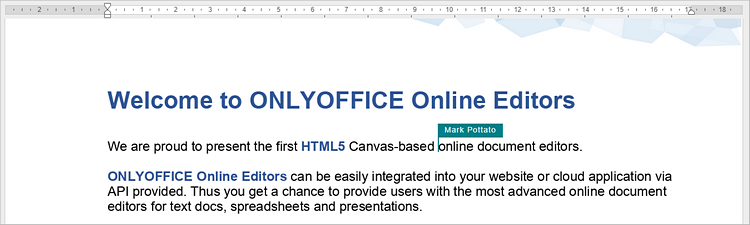
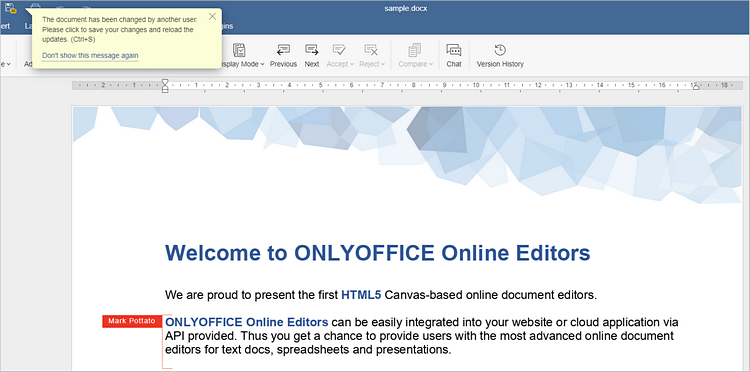
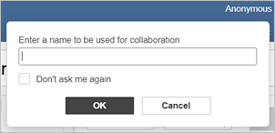

Zajedničko uređivanje dokumenata u realnom vremenu
Uređivač dokumenata omogućava vam stalni timski pristup radu na dokumentima: delite fajlove i foldere, komunicirajte u samom uređivaču, komentarišite odabrane delove dokumenata u slučaju potrebe za dodatnim doprinosom, sačuvajte verzije dokumenta za buduću upotrebu, recenzirajte dokumente i dajte svoje izmene bez direktnog menjanja fajla, uporedite i spojite dokumente radi efikasnije obrade i uređivanja.
U Uređivaču dokumenata možete sarađivati u realnom vremenu koristeći dva režima: Brzi i Strogi.
Režim se bira u Naprednim postavkama, ali i preko ikone Režim zajedničkog uređivanja na kartici Saradnja:

Broj korisnika koji rade na aktuelnom dokumentu prikazan je desno u zaglavlju uređivača – . Da vidite ko još uređuje fajl u tom trenutku, kliknite na ovu ikonu ili otvorite panel Ćaskanje sa prikazom svih korisnika.
Brzi režim
Brzi režim je podrazumevano aktivan i sve izmene drugih korisnika prikazuje odmah u realnom vremenu. U ovom režimu poništavanje poslednje radnje nije dostupno. Tok rada i imena saradnika se prikazuju u tekstu pri uređivanju.
Kada pređete mišem preko dela teksta koji se trenutno uređuje, prikazuje se ime korisnika koji ga uređuje.

Strogi režim
Strogi režim se bira kada želite da izmene drugih korisnika ostanu nevidljive dok ne kliknete na Sačuvaj kako biste sačuvali svoje izmene i prihvatili izmene koautora. Kada više korisnika uređuje dokument istovremeno, uređeni pasusi su označeni isprekidanim linijama različitih boja.

Kada neko od korisnika sačuva izmene klikom na , drugima se u statusnoj traci prikazuje obaveštenje o novim izmenama. Da biste poslali svoje izmene i učitali izmene kolega, kliknite na u gornjem levom uglu alatne trake. Izmene će biti istaknute za brzi pregled.
U naprednim postavkama (Fajl → Napredne postavke) možete odabrati kako želite da budu prikazane izmene tokom zajedničkog rada:
- Prikaži sve – sve izmene tokom aktuelne sesije biće istaknute.
- Prikaži poslednje – samo izmene od poslednjeg klika na će biti istaknute.
- Ne prikazuj – izmene tokom aktuelne sesije neće biti istaknute.
Režim pregleda uživo (Live Viewer)
Live Viewer režim omogućava pregled promena drugih korisnika u realnom vremenu kada je dokument otvoren sa pravima samo za čitanje.
Za funkcionalan rad ovog režima, potvrdite opciju Prikaži izmene drugih korisnika u Naprednim postavkama uređivača.
Anonimni korisnici
Korisnici bez prijavljenog naloga se vode kao anonimni, ali mogu ravnopravno učestvovati u zajedničkom radu. Mogu uneti željeno ime u polje koje se pojavljuje gore desno pri prvom otvaranju dokumenta. Čekirajte „Ne pitaj me ponovo“ za čuvanje imena.
